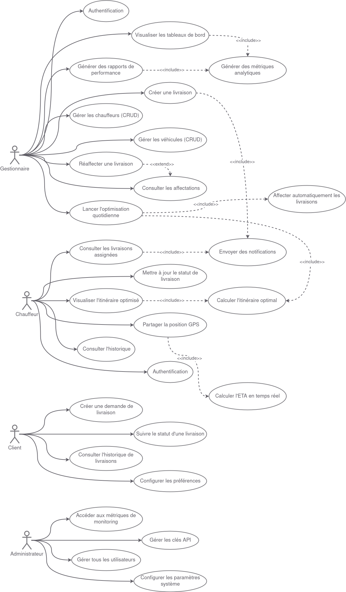

Système de Gestion et d'Optimisation de Livraison
Conception de Systèmes Complexes
Institut Supérieur d'Informatique - Université de Tunis El Manar
Réalisé par: Chiheb ELLEFI, Ibtihel Khmili, Rayen Fehri, Chadha Ammar
Année Universitaire: 2025-2026
Niveau: 2ème Année Ingénieur
Description du Projet
Ce projet vise à concevoir et développer un système complet de gestion et d'optimisation de livraison basé sur une architecture microservices moderne et déployé sur une infrastructure cloud scalable (AWS). Le système permet aux entreprises de livraison d'automatiser l'affectation des chauffeurs, de calculer les itinéraires optimaux, et de suivre les livraisons en temps réel.
Caractéristiques Principales
- Architecture microservices cloud-native sur AWS
- Optimisation intelligente des itinéraires avec OR-Tools de Google
- Suivi en temps réel des chauffeurs et livraisons
- Applications web (Angular) et mobile (React Native/Flutter)
- Scalabilité automatique avec Kubernetes (Amazon EKS)
- Observabilité complète (ELK Stack, Prometheus, Grafana, Zipkin)
Diagrammes du Système
Diagramme de Cas d'Utilisation
Vue globale des interactions entre les acteurs (Gestionnaire, Chauffeur, Client, Administrateur) et le système.
Architecture Globale du Système

Architecture microservices cloud-native déployée sur Amazon Web Services (AWS).
Architecture Détaillée

Décomposition détaillée des services, bases de données, et communication inter-services.
Technologies Utilisées
- Backend: Spring Boot, Spring Cloud (Gateway, Config, Eureka)
- Optimisation: Python, OR-Tools
- Bases de données: PostgreSQL, TimescaleDB, Redis
- Infrastructure: Docker, Kubernetes, Amazon EKS
- Messaging: RabbitMQ (Amazon MQ), REST API, gRPC
- Monitoring: ELK Stack, Prometheus, Grafana, Zipkin
- Frontend: Angular (Web), React Native/Flutter (Mobile)